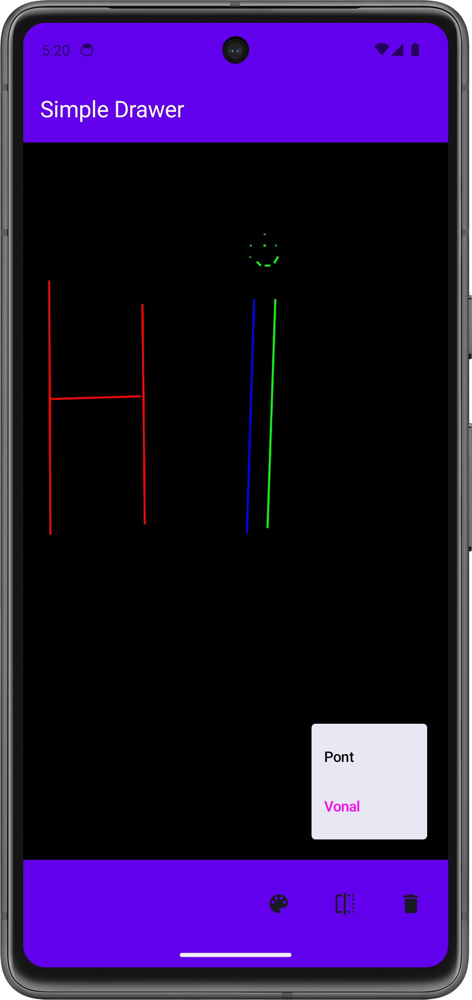
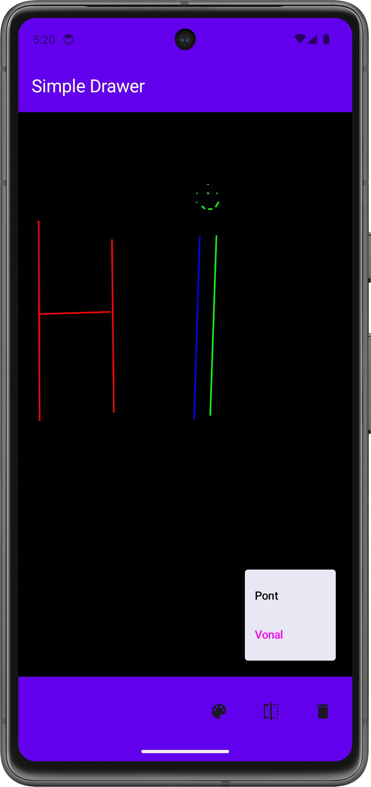

Labor 05 - SQLite - Rajzoló alkalmazás¶
Bevezető¶
A labor során egy egyszerű rajzoló alkalmazás elkészítése a feladat. Az alkalmazással egy vászonra lehet vonalakat vagy pontokat rajzolni, majd a rajzolt ábrát perzisztensen elmenteni, hogy az alkalmazás újraindítása után is visszatöltődjön.

 


Room könyvtár
A labor során meg fogunk ismerkedni az SQLite könyvtárral, mellyel egy lokális SQL adatbázisban tudunk adatokat perszisztensen tárolni. A modern Android alapú fejlesztéseknél már általában a Room-ot használják, mely az SQLite-ra építve biztosít egy könnyen használható ORM réteget az Android életciklusokkal kombinálva. Fontosnak tartottuk viszont, hogy könnyen érthető legyen az anyag, ezért most csak az SQLite-os megoldást fogjuk vizsgálni.
IMSc
A laborfeladatok sikeres befejezése után az IMSc feladat-ot megoldva 2 IMSc pont szerezhető.
Előkészületek¶
A feladatok megoldása során ne felejtsd el követni a feladat beadás folyamatát.
Git repository létrehozása és letöltése¶
-
Moodle-ben keresd meg a laborhoz tartozó meghívó URL-jét és annak segítségével hozd létre a saját repository-dat.
-
Várd meg, míg elkészül a repository, majd checkout-old ki.
Egyetemi laborokban, ha a checkout során nem kér a rendszer felhasználónevet és jelszót, és nem sikerül a checkout, akkor valószínűleg a gépen korábban megjegyzett felhasználónévvel próbálkozott a rendszer. Először töröld ki a mentett belépési adatokat (lásd itt), és próbáld újra.
-
Hozz létre egy új ágat
megoldasnéven, és ezen az ágon dolgozz. -
A
neptun.txtfájlba írd bele a Neptun kódodat. A fájlban semmi más ne szerepeljen, csak egyetlen sorban a Neptun kód 6 karaktere.
A projekt előkészítése¶
A projekt létrehozása¶
Hozzunk létre egy Simple Drawer nevű projektet Android Studioban:
- Hozzunk létre egy új projektet, válasszuk az Empty Activity lehetőséget.
- A projekt neve legyen
Simple Drawer, a kezdő packagehu.bme.aut.android.simpledrawer, a mentési hely pedig a kicheckoutolt repository-n belül az SimpleDrawer mappa. - Nyelvnek válasszuk a Kotlin-t.
- A minimum API szint legyen API24: Android 7.0.
- A Build configuration language Kotlin DSL legyen.
FILE PATH
A projekt a repository-ban lévő SimpleDrawer könyvtárba kerüljön, és beadásnál legyen is felpusholva! A kód nélkül nem tudunk maximális pontot adni a laborra!
A labor során az alábbi technológiákkal fogunk találkozni:
- SQLite
- Scaffold
- TopBar
- BottomBar
- ViewModel
- Dialog
A resource-ok hozzáadása¶
Először töltsük le az alkalmazás képeit tartalmazó tömörített fájlt, ami tartalmazza az összes képet, amire szükségünk lesz. A tartalmát másoljuk be az app/src/main/res mappába (ehhez segít, ha Android Studio-ban bal fent a szokásos Android nézetről a Project nézetre váltunk erre az időre).
Az alábbi, alkalmazáshoz szükséges string resource-okat másoljuk be a res/values/strings.xml fájlba:
<resources>
<string name="app_name">Simple Drawer</string>
<string name="style">Stílus</string>
<string name="line">Vonal</string>
<string name="point">Pont</string>
<string name="color">Szín</string>
<string name="red">Piros</string>
<string name="green">Zöld</string>
<string name="blue">Kék</string>
<string name="clear">Törlés</string>
<string name="are_you_sure_want_to_clear">Biztosan törölni akarod a rajzlapot?</string>
<string name="ok">OK</string>
<string name="cancel">Mégse</string>
</resources>
A kezdő képernyő létrehozása (1 pont)¶
Álló layout kikényszerítése¶
Az alkalmazásunkban az egyszerűség kedvéért most csak az álló módot támogatjuk. Ehhez az AndroidManifest.xml-ben az <activity> tagen belül módosítsuk az alábbiakat:
<activity
android:name=".MainActivity"
android:exported="true"
android:label="@string/app_name"
android:screenOrientation="sensorPortrait"
android:theme="@style/Theme.SimpleDrawer">
<intent-filter>
<action android:name="android.intent.action.MAIN" />
<category android:name="android.intent.category.LAUNCHER" />
</intent-filter>
</activity>
AppBar-ok létrehozása¶
A már létező ui package-en belül hozzunk létre egy view package-et, ezen belül egy TopBar és egy BottomBar Kotlin File-t, majd írjuk bele a következőt:
TopBar.kt:
package hu.bme.aut.android.simpledrawer.ui.view
import androidx.compose.material3.ExperimentalMaterial3Api
import androidx.compose.material3.Text
import androidx.compose.material3.TopAppBar
import androidx.compose.material3.TopAppBarDefaults
import androidx.compose.runtime.Composable
import androidx.compose.ui.graphics.Color
import androidx.compose.ui.res.stringResource
import androidx.compose.ui.tooling.preview.Preview
import hu.bme.aut.android.simpledrawer.R
@OptIn(ExperimentalMaterial3Api::class)
@Composable
fun TopBar() {
TopAppBar(
title = {
Text(
text = stringResource(id = R.string.app_name),
color = Color.White
)
},
colors = TopAppBarDefaults.topAppBarColors(containerColor = Color(0xFF6200EE))
)
}
@Composable
@Preview
fun PreviewTopBar() {
TopBar()
}
BottomBar.kt:
package hu.bme.aut.android.simpledrawer.ui.view
import androidx.compose.foundation.layout.Arrangement
import androidx.compose.foundation.layout.Row
import androidx.compose.foundation.layout.fillMaxSize
import androidx.compose.foundation.layout.height
import androidx.compose.foundation.layout.size
import androidx.compose.material3.BottomAppBar
import androidx.compose.material3.Icon
import androidx.compose.material3.IconButton
import androidx.compose.runtime.Composable
import androidx.compose.ui.Alignment
import androidx.compose.ui.Modifier
import androidx.compose.ui.graphics.Color
import androidx.compose.ui.res.painterResource
import androidx.compose.ui.res.stringResource
import androidx.compose.ui.tooling.preview.Preview
import androidx.compose.ui.unit.dp
import hu.bme.aut.android.simpledrawer.R
@Composable
fun BottomBar() {
BottomAppBar(
actions = {
Row(
modifier = Modifier
.fillMaxSize(),
horizontalArrangement = Arrangement.End,
verticalAlignment = Alignment.CenterVertically
) {
IconButton(
onClick = { /*TODO*/ },
modifier = Modifier.size(64.dp)
) {
Icon(
painterResource(id = R.drawable.ic_style),
contentDescription = stringResource(id = R.string.style)
)
//Stílusok
}
}
},
containerColor = Color(0xFF6200EE),
)
}
@Composable
@Preview
fun PreviewBottomBar() {
BottomBar()
}
A BottomBar már kicsit összetettebb, itt az actions paraméterrel át tudunk adni olyan composable elemeket, amik megjelennek majd kis iconként az AppBar-on, ezekhez később akár onClick eseményt is tudunk adni. Így fogjuk megvalósítani a stílusváltás opciót, amelynek a megnyomására egy ablak ugrik fel, amin ki lehet választani a kívánt stílust (Vonal, pont)
A DrawingScreen felület¶
A ui package-en belül hozzunk létre egy screen package-t. Ebbe fog kerülni a DrawingScreen-ünk. Itt fogjuk elhelyezni a Scaffold-ot, aminek a segítségével egy TopBar-t és egy BottomBar-t is megvalósítunk. Kezdetben a Scaffold tartalma csak egy fekete Spacer lesz, ezt később a Canvas fogja helyettesíteni.
package hu.bme.aut.android.simpledrawer.ui.screen
import androidx.compose.foundation.background
import androidx.compose.foundation.layout.Spacer
import androidx.compose.foundation.layout.fillMaxSize
import androidx.compose.foundation.layout.padding
import androidx.compose.material3.Scaffold
import androidx.compose.runtime.Composable
import androidx.compose.ui.Modifier
import androidx.compose.ui.graphics.Color
import androidx.compose.ui.tooling.preview.Preview
import hu.bme.aut.android.simpledrawer.ui.view.BottomBar
import hu.bme.aut.android.simpledrawer.ui.view.TopBar
@Composable
fun DrawingScreen() {
Scaffold(
topBar = {
TopBar()
},
bottomBar = {
BottomBar()
}
) { innerPadding ->
//TODO replace with canvas
Spacer(
modifier = Modifier
.background(Color.Black)
.padding(innerPadding)
.fillMaxSize()
)
}
}
@Composable
@Preview
fun PreviewDrawingScreen() {
DrawingScreen()
}
Végül írjuk át a MainActivity.kt kódját, úgy hogy az imént létrehozott DrawingScreent példányosítsa:
package hu.bme.aut.android.simpledrawer
import android.os.Bundle
import androidx.activity.ComponentActivity
import androidx.activity.compose.setContent
import androidx.activity.enableEdgeToEdge
import hu.bme.aut.android.simpledrawer.ui.screen.DrawingScreen
import hu.bme.aut.android.simpledrawer.ui.theme.SimpleDrawerTheme
class MainActivity : ComponentActivity() {
override fun onCreate(savedInstanceState: Bundle?) {
super.onCreate(savedInstanceState)
enableEdgeToEdge()
setContent {
SimpleDrawerTheme {
DrawingScreen()
}
}
}
}
Hogy ha ezzel is megvagyunk indítsuk el az alkalmazást! Most már látjuk a két AppBar-t illetve a közötte elhelyezkedő fekete képernyőt. A BottomBar-on feltűnik egy icon is, aminek a megnyomása még semmit nem csinál.
BEADANDÓ (1 pont)
Készíts egy képernyőképet, amelyen látszik az elkészült kezdőképernyő (emulátoron, készüléket tükrözve vagy képernyőfelvétellel), egy ahhoz tartozó kódrészlet, valamint a neptun kódod a kódban valahol kommentként' A képet a megoldásban a repository-ba f1.png néven töltsd föl!
A képernyőkép szükséges feltétele a pontszám megszerzésének.
A stílusválasztó megvalósítása (1 pont)¶
Most, hogy már létre van hozva a BottomBar, illetve a kezdőképernyő váza, valósítsuk meg a stílus választást is. Ehhez módosítanunk kell a BottomBar-t, úgy, hogy ha a Stílus választó gombra kattintunk, akkor megjelenjen egy menü, amin ki lehet választani a rajzmódot. Ez a mód a rajzolás egy állapotaként valósítható meg. Ezeket az állapotokat pedig a korábbi laborokon látottak szerint egy külön viewModel-ben tároljuk.
Szükséges függőség hozzáadása¶
A viewModel használatához fel kell vennünk egy függőséget a build.gradle.kts fájlba. Ehhez nyissuk meg a libs.versions.toml fájlt a gradle package-ben, majd írjuk bele a következőt:
[versions]
...
lifecycleCompose = "2.8.6"
[libraries]
...
androidx-lifecycle-compose = {group = "androidx.lifecycle", name = "lifecycle-viewmodel-compose", version.ref = "lifecycleCompose" }
build.gradle.kts-t is:
dependencies{
...
implementation(libs.androidx.lifecycle.compose)
}
A függőség felvétele után ne felejtsünk el rányomni a Sync Now gombra.
ViewModel létrehozás¶
Hozzuk tehát a viewModel-ünket. Ez segítésget fog nyújtani a szín/stílus váltásban, és később a perzisztens adattárolásban.
Hozzunk létre a screen package-be a DrawingScreen mellé egy DrawingViewModel Kotlin Filet majd írjuk bele a következő kódot:
package hu.bme.aut.android.simpledrawer.ui.screen
import android.app.Application
import androidx.lifecycle.AndroidViewModel
import androidx.lifecycle.viewModelScope
import kotlinx.coroutines.flow.MutableStateFlow
import kotlinx.coroutines.flow.StateFlow
import kotlinx.coroutines.launch
class DrawingViewModel(application: Application): AndroidViewModel(application){
private val _drawingMode = MutableStateFlow(DrawingMode.LINE)
val drawingMode: StateFlow<DrawingMode> = _drawingMode
private val _drawElements = MutableStateFlow<List<Any>>(emptyList())
val drawElements: StateFlow<List<Any>> = _drawElements
fun setDrawingMode(mode: DrawingMode){
viewModelScope.launch {
_drawingMode.value = mode
}
}
fun addDrawElement(element: Any) {
viewModelScope.launch {
_drawElements.value += element
}
}
}
enum class DrawingMode{
LINE,
POINT
}
Az viewModel-hez szükségünk van még egy osztályra a DrawingMode-ra. Ezzel tudjuk majd állítani a rajz stílust.
Kód értelmezése
A laborvezető segítségével értelmezzük a viewModel kódját!
Most, hogy megvan a viewModel-ünk, már csak a BottomBar-t kell módosítani, hogy be tudjuk állítani az állapotot.
Stílusválasztó¶
Módosítsuk a BottomBar-t, úgy, hogy ha a Stílus választó gombra kattintunk, akkor megjelenjen egy ablak, amin ki lehet választani a rajzmódot. Ezt a következő képpen tehetjük meg:
@Composable
fun BottomBar(
viewModel: DrawingViewModel = viewModel()
){
var showStyle by remember { mutableStateOf(false) }
val drawingMode by viewModel.drawingMode.collectAsState()
BottomAppBar(
...
actions = {
Row (
...
){
IconButton(
onClick = { showStyle = !showStyle },
modifier = Modifier.size(64.dp)
) {
Icon(
painterResource(id = R.drawable.ic_style),
contentDescription = stringResource(id = R.string.style)
)
DropdownMenu(
expanded = showStyle,
onDismissRequest = { showStyle = false}) {
DropdownMenuItem(
text = { Text(
stringResource(id = R.string.point),
color = if (drawingMode == DrawingMode.POINT) Color.Magenta else Color.Black
) },
onClick = {
viewModel.setDrawingMode(DrawingMode.POINT)
showStyle = false
}
)
DropdownMenuItem(
text = { Text(
stringResource(id = R.string.line),
color = if (drawingMode == DrawingMode.LINE) Color.Magenta else Color.Black)
},
onClick = {
viewModel.setDrawingMode(DrawingMode.LINE)
showStyle = false
}
)
}
}
...
}
},
...
)
}
viewModel
Sokszor az Android Studio nem tudja megtalálni a viewModel()-hez szükséges importot. Ilyenkor kézileg írjuk az importokhoz az alábbi importot:
import androidx.lifecycle.viewmodel.compose.viewModel
Ezután módosítsuk a DrawingScreen-en a BottomBar függvény hívást, és vegyük hozzá a viewModel paramétert.
package hu.bme.aut.android.simpledrawer.ui.screen
import android.app.Application
import androidx.compose.foundation.background
import androidx.compose.foundation.layout.Spacer
import androidx.compose.foundation.layout.fillMaxSize
import androidx.compose.foundation.layout.padding
import androidx.compose.material3.Scaffold
import androidx.compose.runtime.Composable
import androidx.compose.ui.Modifier
import androidx.compose.ui.graphics.Color
import androidx.compose.ui.platform.LocalContext
import androidx.compose.ui.tooling.preview.Preview
import androidx.lifecycle.ViewModelProvider
import androidx.lifecycle.viewmodel.compose.viewModel
import hu.bme.aut.android.simpledrawer.ui.view.BottomBar
import hu.bme.aut.android.simpledrawer.ui.view.TopBar
@Composable
fun DrawingScreen() {
val viewModel: DrawingViewModel = viewModel(
factory = ViewModelProvider.AndroidViewModelFactory(
LocalContext.current.applicationContext as Application
)
)
Scaffold(
topBar = {
TopBar()
},
bottomBar = {
BottomBar(viewModel = viewModel)
}
) { innerPadding ->
//TODO replace with canvas
Spacer(
modifier = Modifier
.background(Color.Black)
.padding(innerPadding)
.fillMaxSize()
)
}
}
@Composable
@Preview
fun PreviewDrawingScreen() {
DrawingScreen()
}
BEADANDÓ (1 pont)
Készíts egy képernyőképet, amelyen látszik az elkészült Stílusválasztó kinyitva (emulátoron, készüléket tükrözve vagy képernyőfelvétellel), egy ahhoz tartozó kódrészlet, valamint a neptun kódod a kódban valahol kommentként! A képet a megoldásban a repository-ba f2.png néven töltsd föl!
A képernyőkép szükséges feltétele a pontszám megszerzésének.
A canvas megvalósítása (1 pont)¶
A rajzolás folyamán pontokat és vonalakat szeretnénk rajzolni. Ezek kezeléséhez hozzunk létre két data class-t Line és Point néven. Hozzunk létre egy model package-et a fő package-ünkben, majd implementáljuk a két osztályt:
Point.kt:
package hu.bme.aut.android.simpledrawer.model
import androidx.compose.ui.graphics.Color
data class Point(
var x: Float = 0F,
var y: Float = 0F,
var color: Color = Color.Yellow
)
Line.kt:
package hu.bme.aut.android.simpledrawer.model
import androidx.compose.ui.graphics.Color
data class Line(
var start: Point,
var end: Point,
var color: Color = Color.Yellow
)
Ilyen formában fogjuk tárolni az adatunkat a listában. Igaz, hogy a Line data class még kétszer megkapja a színt, de ez csak az egyszerűség kedvéért lesz így, ezzel a paraméterrel nem fogunk foglalkozni.
Ezután a view package-en belül hozzunk létre egy DrawingCanvas Kotlin File-t. Ebben a Composable osztályban a beépített Canvas Composable segítségével fogjuk a rajzolást megvalósítani. Ennek az osztálynak van egy Modifier.pointerInteropFilter paramétere, aminek a segítségével fogjuk a gesztusokat lekezelni.
package hu.bme.aut.android.simpledrawer.ui.view
import androidx.compose.foundation.Canvas
import androidx.compose.foundation.background
import androidx.compose.runtime.Composable
import androidx.compose.runtime.getValue
import androidx.compose.runtime.mutableStateOf
import androidx.compose.runtime.remember
import androidx.compose.runtime.setValue
import androidx.compose.ui.ExperimentalComposeUiApi
import androidx.compose.ui.Modifier
import androidx.compose.ui.geometry.Offset
import androidx.compose.ui.graphics.Color
import androidx.compose.ui.input.pointer.pointerInteropFilter
import hu.bme.aut.android.simpledrawer.ui.screen.DrawingMode
import hu.bme.aut.android.simpledrawer.ui.screen.DrawingViewModel
@OptIn(ExperimentalComposeUiApi::class)
@Composable
fun DrawingCanvas(
modifier: Modifier = Modifier,
currentColor: Color = Color.Red,
drawingMode: DrawingMode,
viewModel: DrawingViewModel,
drawElements: List<Any>
) {
var startPoint by remember { mutableStateOf<Offset?>(null) }
var endPoint by remember { mutableStateOf<Offset?>(null) }
var tempPoint by remember { mutableStateOf<Offset?>(null) }
Canvas(
modifier = modifier
.background(Color.Black)
.pointerInteropFilter { event ->
when (event.action) {
/*TODO*/
//ACTION_DOWN
//ACTION_MOVE
//ACTION_UP
}
true
}
) {
//TODO drawElements
}
}
Az event.action-ön belül kezelni fogjuk a MotionEvent.ACTION_DOWN, MotionEvent.ACTION_MOVE, MotionEvent.ACTION_UP eventeket, valamint a Canvas-re rajzolást is.
ACTION_DOWN:
MotionEvent.ACTION_DOWN -> {
startPoint = Offset(event.x, event.y)
tempPoint = startPoint
}
startPoint váltózóba.
ACTION_MOVE:
MotionEvent.ACTION_MOVE -> {
tempPoint = Offset(event.x, event.y)
if (drawingMode == DrawingMode.LINE) {
endPoint = tempPoint
}
}
tempPoint-ba írjuk bele a pozíciót. Hogy ha vonalat rajzolunk, akkor az endPoint-ba kell beleírnunk a pozíciót.
ACTION_UP:
MotionEvent.ACTION_UP -> {
if (drawingMode == DrawingMode.POINT) {
tempPoint?.let {
viewModel.addDrawElement(Point(it.x, it.y, currentColor))
}
} else if (drawingMode == DrawingMode.LINE) {
endPoint?.let {
startPoint?.let { start ->
viewModel.addDrawElement(
Line(
Point(start.x, start.y, currentColor),
Point(it.x, it.y, currentColor),
currentColor
)
)
}
}
}
startPoint = null
endPoint = null
tempPoint = null
}
Ennél az eseménynél már azt kezeljük mikor a felhasználó felemelte az újját a képernyőről. Itt is két lehetőségre bomlik az algoritmus, ugyanis, hogy ha pontról van szó, akkor csak a tempPoint értékét kell rögzíteni. Azonban, ha már vonalról, akkor az endPoint illetve a startPoint értékeit kell rögzíteni vonalként. Mindkét eseménynél szükséges a null ellenőrzés!
Miután az események megvannak, már csak a kirajzolást kell megoldani. Ezt úgy tehetjük meg, hogy a drawElements-be eltárolt adatokat egyesével kirajzoljuk típusuktól függően:
Canvas (..){
drawElements.forEach { element ->
when (element) {
is Point -> drawCircle(color = element.color, center = Offset(element.x, element.y), radius = 5f)
is Line -> drawLine(color = element.color, start = Offset(element.start.x, element.start.y), end = Offset(element.end.x, element.end.y), strokeWidth = 5f)
}
}
...
}
DrawingCanvas, azonban így még nem látjuk a rajzot, csak ha az ujjunkat felemeltük a kijelzőről. Ezt a következő képpen lehet javítani:
Canvas (..){
...
tempPoint?.let {
if (drawingMode == DrawingMode.POINT) {
drawCircle(color = currentColor, center = it, radius = 5f)
} else if (drawingMode == DrawingMode.LINE && startPoint != null) {
drawLine(color = currentColor, start = startPoint!!, end = it, strokeWidth = 5f)
}
}
}
Ezután módosítsuk a DrawingScreen-t és cseréljük le a Spacer-t az imént elkészített DrawingCanvas-re.
@Composable
fun DrawingScreen() {
val viewModel: DrawingViewModel = viewModel(
factory = ViewModelProvider.AndroidViewModelFactory(
LocalContext.current.applicationContext as Application
)
)
val drawingMode by viewModel.drawingMode.collectAsState()
val drawElements by viewModel.drawElements.collectAsState()
Scaffold(
...
) { innerPadding ->
DrawingCanvas(
modifier = Modifier
.padding(innerPadding)
.fillMaxSize(),
drawingMode = drawingMode,
viewModel = viewModel,
drawElements = drawElements
)
}
}
BEADANDÓ (1 pont)
Készíts egy képernyőképet, amelyen látszik az elkészült DrawingScreen (emulátoron, készüléket tükrözve vagy képernyőfelvétellel) pár vonallal és ponttal, a DrawingCanvas egy kódrészlete, valamint a neptun kódod a kódban valahol kommentként! A képet a megoldásban a repository-ba f3.png néven töltsd föl!
A képernyőkép szükséges feltétele a pontszám megszerzésének.
Perzisztencia megvalósítása SQLite adatbázis segítségével (1 pont)¶
Ahhoz, hogy az általunk rajzolt objektumok megmaradjanak az alkalmazásból való kilépés után is, az adatainkat valahogy olyan formába kell rendeznünk, hogy azt könnyedén el tudjuk tárolni egy SQLite adatbázisban.
Hozzunk létre egy új package-et az hu.bme.aut.android.simpledrawer-en belül, aminek adjuk az sqlite nevet.
Táblák definiálása¶
Az adatbáziskezelés során sok konstans jellegű változóval kell dolgoznunk, mint például a táblákban lévő oszlopok nevei, táblák neve, adatbázis fájl neve, séma létrehozó és törlő szkiptek, stb. Ezeket érdemes egy közös helyen tárolni, így szerkesztéskor vagy új entitás bevezetésekor nem kell a forrásfájlok között ugrálni, valamint egyszerűbb a teljes adatbázist létrehozó és törlő szkripteket generálni. Hozzunk létre egy új singleton osztályt az object kulcsszóval az sqlite package-en belül DbConstants néven.
Ezen belül először is konstansként felvesszük az adatbázis nevét és verzióját is. Ha az adatbázisunk sémáján szeretnénk változtatni, akkor ez utóbbit kell inkrementálnunk, így elkerülhetjük az inkompatibilitás miatti nem kívánatos hibákat.
package hu.bme.aut.android.simpledrawer.sqlite
object DbConstants{
const val DATABASE_NAME = "simpledrawer.db"
const val DATABASE_VERSION = 1
//Points
//Lines
}
DbConstants nevű osztályba hozzuk létre a Point osztályhoz a konstansokat. Az osztályokon belül létrehozunk egy enum-ot is, hogy könnyebben tudjuk kezelni a tábla oszlopait, majd konstansokban eltároljuk a tábla létrehozását szolgáló SQL utasítást valamint a tábla nevét is. Végezetül elkészítjük azokat a függvényeket, amelyeket a tábla létrehozásakor, illetve upgrade-elésekor kell meghívni:
object Points {
const val DATABASE_TABLE = "points"
enum class Columns {
ID, COORD_X, COORD_Y
}
private val DATABASE_CREATE = """create table if not exists $DATABASE_TABLE (
${Columns.ID.name} integer primary key autoincrement,
${Columns.COORD_X.name} real not null,
${Columns.COORD_Y.name} real not null
);"""
private const val DATABASE_DROP = "drop table if exists $DATABASE_TABLE;"
fun onCreate(database: SQLiteDatabase) {
database.execSQL(DATABASE_CREATE)
}
fun onUpgrade(database: SQLiteDatabase, oldVersion: Int, newVersion: Int) {
database.execSQL(DATABASE_DROP)
onCreate(database)
}
}
Figyeljük meg, hogy a DbConstants osztályon belül létrehoztunk egy belső Points nevű osztályt, amiben a Points entitásokat tároló táblához tartozó konstans értékeket tároljuk. Amennyiben az alkalmazásunk több entitást is adatbázisban tárol, akkor érdemes az egyes osztályokhoz tartozó konstansokat külön-külön belső osztályokban tárolni. Így sokkal átláthatóbb és karbantarthatóbb lesz a kód, mint ha ömlesztve felvennénk a DbConstants-ba az összes tábla összes konstansát. Ezek a belső osztályok praktikusan ugyanolyan névvel léteznek, mint az entitás osztályok. Vegyük tehát fel hasonló módon a Lines nevű osztályt is:
object Lines {
const val DATABASE_TABLE = "lines"
enum class Columns {
ID, START_X, START_Y, END_X, END_Y
}
private val DATABASE_CREATE = """create table if not exists $DATABASE_TABLE (
${Columns.ID.name} integer primary key autoincrement,
${Columns.START_X.name} real not null,
${Columns.START_Y.name} real not null,
${Columns.END_X.name} real not null,
${Columns.END_Y.name} real not null
);"""
private const val DATABASE_DROP = "drop table if exists $DATABASE_TABLE;"
fun onCreate(database: SQLiteDatabase) {
database.execSQL(DATABASE_CREATE)
}
fun onUpgrade(database: SQLiteDatabase, oldVersion: Int, newVersion: Int) {
database.execSQL(DATABASE_DROP)
onCreate(database)
}
}
Érdemes megfigyelni továbbá azt is, hogy az osztályokat nem a class kulcsszóval deklaráltuk. Helyette az object-et használjuk, amivel a Kotlin nyelv azt biztosítja számunkra, hogy a DbConstants és a benne lévő Points és Lines osztály is singletonként viselkednek, azaz az alkalmazás futtatásakor létrejön belőlük egy példány, további példányokat pedig nem lehet létrehozni belőlük.
A segédosztály létrehozása¶
Az adatbázis létrehozásához szükség van egy olyan segédosztályra, ami létrehozza magát az adatbázist, és azon belül inicializálja a táblákat is. Esetünkben ez lesz a DbHelper osztály, ami az SQLiteOpenHelper osztályból származik. Vegyük fel ezt is az sqlite package-be.
package hu.bme.aut.android.simpledrawer.sqlite
import android.content.Context
import android.database.sqlite.SQLiteDatabase
import android.database.sqlite.SQLiteOpenHelper
class DbHelper(context: Context):
SQLiteOpenHelper(context, DbConstants.DATABASE_NAME, null, DbConstants.DATABASE_VERSION) {
override fun onCreate(sqLiteDatabase: SQLiteDatabase) {
DbConstants.Lines.onCreate(sqLiteDatabase)
DbConstants.Points.onCreate(sqLiteDatabase)
}
override fun onUpgrade(
sqLiteDatabase: SQLiteDatabase,
oldVersion: Int,
newVersion: Int
) {
DbConstants.Lines.onUpgrade(sqLiteDatabase, oldVersion, newVersion)
DbConstants.Points.onUpgrade(sqLiteDatabase, oldVersion, newVersion)
}
}
Ezen kívül szükségünk van még egy olyan segédosztályra is, ami ezt az egészet összefogja, és amivel egyszerűen tudjuk kezelni az adatbázisunkat. Ez lesz a PersistentDataHelper továbbra is az sqlite package-ben. Ebben olyan függényeket fogunk megvalósítani, mint pl. az open() és a close(), amikkel az adatbáziskapcsolatot nyithatjuk meg, illetve zárhatjuk le. Ezen kívül ebben az osztályban valósítjuk meg azokat a függvényeket is, amik az adatok adatbázisba való kiírásáért, illetve az onnan való kiolvasásáért felelősek. Figyeljünk rá, hogy a saját Point osztályunkat válasszuk az import során.
package hu.bme.aut.android.simpledrawer.sqlite
import android.content.Context
import android.database.sqlite.SQLiteDatabase
import android.database.sqlite.SQLiteException
class PersistentDataHelper(context: Context) {
private var database: SQLiteDatabase? = null
private val dbHelper: DbHelper = DbHelper(context)
private val pointColumns = arrayOf(
DbConstants.Points.Columns.ID.name,
DbConstants.Points.Columns.COORD_X.name,
DbConstants.Points.Columns.COORD_Y.name,
)
private val lineColumns = arrayOf(
DbConstants.Lines.Columns.ID.name,
DbConstants.Lines.Columns.START_X.name,
DbConstants.Lines.Columns.START_Y.name,
DbConstants.Lines.Columns.END_X.name,
DbConstants.Lines.Columns.END_Y.name,
)
@Throws(SQLiteException::class)
fun open() {
database = dbHelper.writableDatabase
}
fun close() {
dbHelper.close()
}
//PersistPoints
//RestorePoints
//ClearPoints
//CursorToPoint
//PersistLines
//RestoreLines
//ClearLines
//CursorToLine
}
Egészítsük ki a PersistentDataHelper osztályt az alábbiak szerint:
- PersistPoints: Itt kell megvalósítanunk a pontok eltárolását. Elsősorban ürítjük az adatbázist, utána pedig a kapott Lista paraméteren végigmegyünk és egyesével elmentjük a pontokat.
- RestorePoints: Itt kell megvalósítanunk a pontok betöltését. Ehhez egy ideiglenes MutableList-et használunk, amelyhez hozzáadjuk a kiolvasott pontokat.
- ClearPoints: Ezzel a függvénnyel érjük el hogy az adatbázisból töröljük a Points táblát.
- CursorToPoint: Ezzel a függvénnyel olvasunk ki egyetlen pontnak az adatát az adatbázisból.
- PersistLines: Itt kell megvalósítanunk a vonalak eltárolását. Elsősorban ürítjük az adatbázist, utána pedig a kapott Lista paraméteren végigmegyünk és egyesével elmentjük a vonalakat.
- RestoreLines: Itt kell megvalósítanunk a vonalak betöltését. Ehhez egy ideiglenes MutableList-et használunk, amelyhez hozzáadjuk a kiolvasott vonalakat.
- ClearLines: Ezzel a függvénnyel érjük el hogy az adatbázisból töröljük a Lines táblát.
- CursorToLine: Ezzel a függvénnyel olvasunk ki egyetlen vonalnak adatát az adatbázisból.
1. PersistPoints
fun persistPoints(points: List<Point>) {
clearPoints()
for (point in points) {
val values = ContentValues()
values.put(DbConstants.Points.Columns.COORD_X.name, point.x)
values.put(DbConstants.Points.Columns.COORD_Y.name, point.y)
database!!.insert(DbConstants.Points.DATABASE_TABLE, null, values)
}
}
fun restorePoints(): MutableList<Point> {
val points: MutableList<Point> = ArrayList()
val cursor = database!!.query(
DbConstants.Points.DATABASE_TABLE,
pointColumns,
null,
null,
null,
null,
null
)
cursor.moveToFirst()
while (!cursor.isAfterLast) {
val point: Point = cursorToPoint(cursor)
points.add(point)
cursor.moveToNext()
}
cursor.close()
return points
}
3. ClearPoints
fun clearPoints() {
database!!.delete(DbConstants.Points.DATABASE_TABLE, null, null)
}
4. CursorToPoints
private fun cursorToPoint(cursor: Cursor): Point {
val point = Point(
cursor.getFloat(DbConstants.Points.Columns.COORD_X.ordinal),
cursor.getFloat(DbConstants.Points.Columns.COORD_Y.ordinal),
Color(Color.Red.toArgb())
)
return point
}
5. PersistLines
fun persistLines(lines: List<Line>) {
clearLines()
for (line in lines) {
val values = ContentValues()
values.put(DbConstants.Lines.Columns.START_X.name, line.start.x)
values.put(DbConstants.Lines.Columns.START_Y.name, line.start.y)
values.put(DbConstants.Lines.Columns.END_X.name, line.end.x)
values.put(DbConstants.Lines.Columns.END_Y.name, line.end.y)
database!!.insert(DbConstants.Lines.DATABASE_TABLE, null, values)
}
}
fun restoreLines(): MutableList<Line> {
val lines: MutableList<Line> = ArrayList()
val cursor = database!!.query(
DbConstants.Lines.DATABASE_TABLE,
lineColumns,
null,
null,
null,
null,
null
)
cursor.moveToFirst()
while (!cursor.isAfterLast) {
val line: Line = cursorToLine(cursor)
lines.add(line)
cursor.moveToNext()
}
cursor.close()
return lines
}
7. ClearLines
fun clearLines() {
database!!.delete(DbConstants.Lines.DATABASE_TABLE, null, null)
}
8. CursorToLine
private fun cursorToLine(cursor: Cursor): Line {
val line = Line(
Point(
cursor.getFloat(DbConstants.Lines.Columns.START_X.ordinal),
cursor.getFloat(DbConstants.Lines.Columns.START_Y.ordinal)
),
Point(
cursor.getFloat(DbConstants.Lines.Columns.END_X.ordinal),
cursor.getFloat(DbConstants.Lines.Columns.END_Y.ordinal)
),
Color(Color.Red.toArgb())
)
return line
}
ViewModel kiegészítése¶
Ahhoz hogy a perzisztencia rendesen működjön ki kell egészítenünk a viewModel-t, úgy hogy minden egyes rajzolás után elmentse az adatbázisba az adatokat. Így az adataink akkor is megmaradnak, ha újraindítjuk az alkalmazást. Ahhoz hogy ezt lássuk is újra a rajzoló felületen, be is kell tölteni a rajzot. Ebben szerpet fog játszani az init{} blokk.
class DrawingViewModel(application: Application): AndroidViewModel(application){
//DrawingMode
//DrawElements
private val dataHelper = PersistentDataHelper(application)
init{
loadDrawElements()
}
//setDrawingMode
fun addDrawElement(element: Any) {
viewModelScope.launch {
_drawElements.value += element
saveDrawElements()
}
}
private fun saveDrawElements() {
viewModelScope.launch {
dataHelper.open()
dataHelper.clearPoints()
dataHelper.clearLines()
val points = _drawElements.value.filterIsInstance<Point>()
val lines = _drawElements.value.filterIsInstance<Line>()
dataHelper.persistPoints(points)
dataHelper.persistLines(lines)
dataHelper.close()
}
}
private fun loadDrawElements() {
viewModelScope.launch {
dataHelper.open()
val points = dataHelper.restorePoints()
val lines = dataHelper.restoreLines()
_drawElements.value = points + lines
dataHelper.close()
}
}
}
Láthatjuk, hogy az init{} blokkban meghívódik a loadDrawElements() aminek a segítségével, kiolvassuk a korábban definiált restorePoints és restoreLines függvényekkel az adatokat az adatbázisból, majd hozzáadjuk a Listánkhoz.
A mentés hasonló módon működik csak ezt a függvényt akkor hívjuk, hogyha rajzoltunk.
BEADANDÓ (1 pont)
Készíts egy képernyőképet, amelyen látszik az elkészült DrawingScreen (emulátoron, készüléket tükrözve vagy képernyőfelvétellel) pár vonallal és ponttal, és az ahhoz tartozó kódrészlet, valamint a neptun kódod a kódban valahol kommentként! A képet a megoldásban a repository-ba f4.png néven töltsd föl!
A képernyőkép szükséges feltétele a pontszám megszerzésének.
Önállo feladat: A vászon törlése (1 pont)¶
A BottomBar-on vegyünk fel egy új vezérlőt, ami a törlésért felelős! Ennek megnyomása esetén egy dialógus ablak ugorjon fel, és figyelmeztessen minket, hogy a törlés nem visszavonható! Legyen egy pozitív és egy negatív gombja!
A gomb iconja legyen a R.drawable.ic_clear_canvas!
BEADANDÓ (1 pont)
Készíts egy képernyőképet, amelyen látszik a törlést megerősítő dialógus ablak (emulátoron, készüléket tükrözve vagy képernyőfelvétellel), a törlést elvégző kódrészlet, valamint a neptun kódod a kódban valahol kommentként! A képet a megoldásban a repository-ba f5.png néven töltsd föl!
A képernyőkép szükséges feltétele a pontszám megszerzésének.
iMSc feladat (2 iMSc pont)¶
Vegyünk fel az alkalmazásba egy olyan vezérlőt, amivel változtatni lehet a rajzolás színét a 3 fő szín között (RGB).
Figyelem: az adatbázisban is el kell menteni az adott objektum színét!
Adatbázis
Érdemes Wipe Data-t indítani, vagy verziót váltani az adatbázisnál, hogy ha változtatjuk a felépítését.
BEADANDÓ (1 iMSc pont)
Készíts egy képernyőképet, amelyen látszik a rajzoló oldal a különböző színekkel (emulátoron, készüléket tükrözve vagy képernyőfelvétellel), egy ahhoz tartozó kódrészlet, valamint a neptun kódod a kódban valahol kommentként! A képet a megoldásban a repository-ba f6.png néven töltsd föl!
A képernyőkép szükséges feltétele a pontszám megszerzésének.
BEADANDÓ (1 iMSc pont)
Készíts egy képernyőképet, amelyen látszik a különböző színek mentését végző kódrészletet, valamint a neptun kódod a kódban valahol kommentként! A képet a megoldásban a repository-ba f7.png néven töltsd föl!
A képernyőkép szükséges feltétele a pontszám megszerzésének.